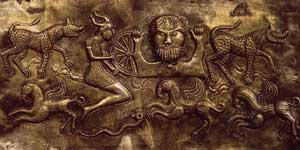

Дагда ( "хороший, добрий бог"), в ірландській міфології один з богів Племен богині Дану, господар котла достатку. Дагда, персонаж багатьох древнеірландского легенд, втілив в собі риси, якими кельти наділяли всемогутніх представників царства мертвих, божественних правителів світу. Дагда зазвичай зображували у вигляді велетня з величезної палицею, яку доводилося везти на візку. Одним кінцем своєї зброї він таврував ворогів, а іншим відроджував до життя мертвих. Жив Дагда на пагорбі Бруіг, а його дружиною була річка Воєн, ототожнюється в кельтської міфології з божеством.
Існують варіанти кельтських легенд, в яких Дагда постає як бог, що протегує хорошим врожаям і володіє безмежною владою над явищами природи. Так, згідно з переказами, Дагда міг управляти грозою, блискавкою, градом, дощами і т. П. Мабуть, з цієї причини його ім'я іноді ставлять в один ряд з іменами богів війни і руйнування. У деяких міфах його називають "Еохаід, батько всіх", що свідчить про глибоку повагу, яке виявляли кельти до цього героя. Дагда вважали мудрим, всезнаючим чарівником і великим воїном. Він вимагав беззаперечного підпорядкування і вів Племена богині Дану в бій, вражаючи будь-якого, хто насмілювався йому перечити.
Напередодні другої битви при Мойтуре, під час новорічного перемир'я, він відвідав ворожий табір фоморов, де для нього приготували кашу з молока, борошна, сала, свинини і козлятини, якої вистачило б для п'ятдесяти осіб. Під страхом смерті фомори наказали Дагда все це з'їсти, що він і виконав за допомогою величезного черпака. Випробування тимчасово перетворило Дагда в товстуна, але не завадило йому зайнятися любов'ю з фоморской дівчиною, яка пообіцяла в знак подяки звернути свою магію на користь Племен богині Дану.